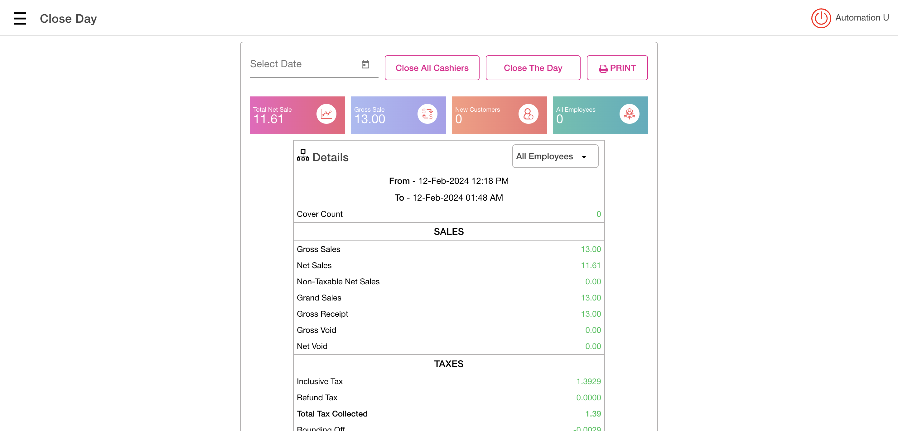
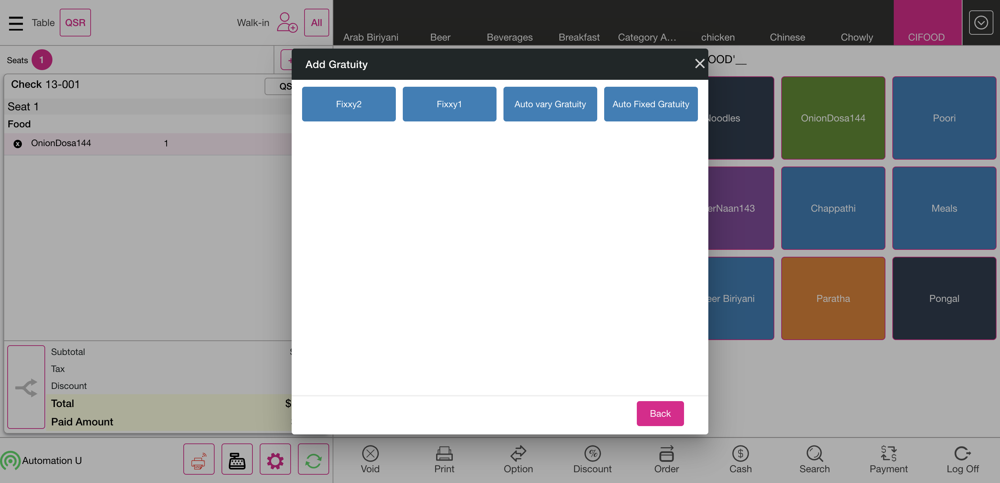
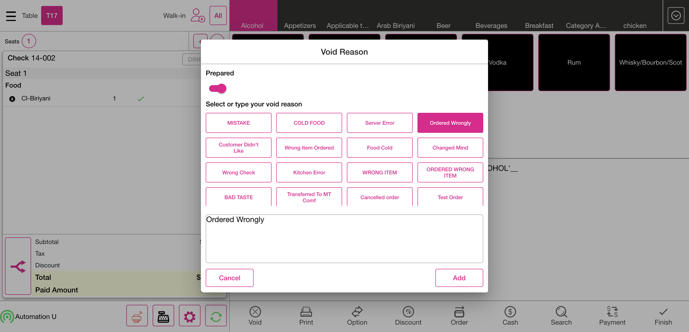
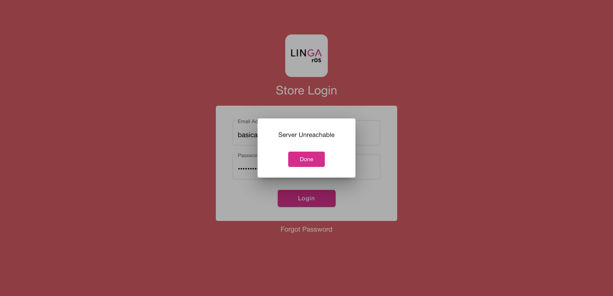
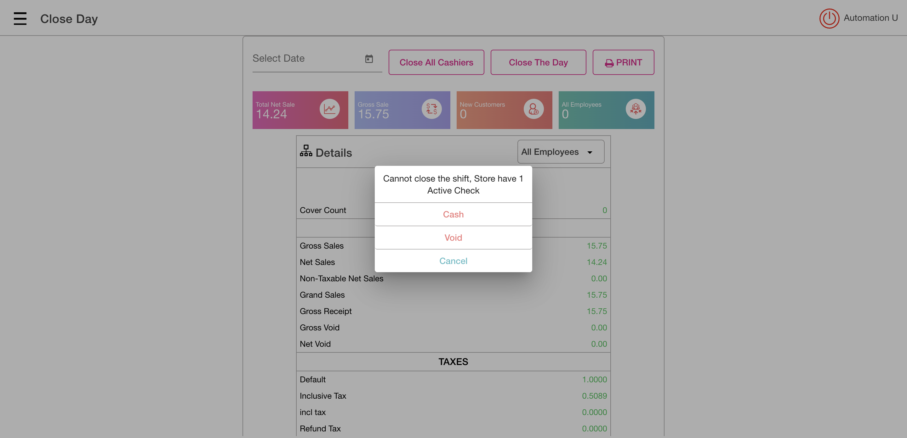

-
verify the close day screen
12:10:46 pm / 00:20:39:544 Fail
verify the close day screen
02.12.2024 12:10:46 pm 02.12.2024 12:31:26 pm 00:20:39:544 · #test-id=1Passverify the values in closeday screen before creating a sales,netsale value,gross sale value,Cover count,creditcard,gross receipt,gross sale,netsale,netvoid,initialTaxExempt,initial grossvoid,Passverify the values in closeday screen before creating a sales,netsale value,gross sale value,Cover count,creditcard,gross receipt,gross sale,netsale,netvoid,initialTaxExempt,initial grossvoid,Given I'm logged inAnd I close the order type windowAnd I click the Settings buttonAnd I click close day tabAnd I click close all cashier buttonWhen I verify the cannot close the shift, store have the active checksWhen I click the Close the day button in the operation screenThen I should see do you want to close the day popupAnd I click yes button on the do you want close the day popupWhen I click the submit button the close the day checklistThen I should see close day performed successfully popupAnd I click Done button on the PopupAnd I click the Toggle Icon buttonAnd I click POS Icon from ToggleAnd I close the order type windowAnd I click log off button in order screenGiven I enter the Pin number for loginAnd I click the operation button in the login screenAnd I click close day tabAnd I click close all cashier buttonWhen I verify the cannot close the shift, store have the active checksThen I should verify the value Net Sale of "0.00" "verify the 0.00value"And I should verify the value of Gross Sale "0.00" "Check gross sale value"And I should verify the value of New Customer "0" "Check New customer value"And I should verify the value of All Employees "0" "Check All employees value"Then I should verify the value of "0.00" "verify the total net sale value"Then I should verify the value of Gross Sale1 "0.00" "Check gross sale value"Then I should see the close day with "0"Then It should show the Gross Receipt as "0.00" "Verify Gross Receipt"Then I should verify the value of the "0.00" "Check gross void value"Then I should verify the net void in the sale recap after creating sale"0.00" "Check net void value"Then I should verify the initial Gross sale value as"0.00" "Check gross sale value"And I should verify the current date is displayedAnd I click print button in the Close the day screen "Click the Print Button"And I click power button1Passverify the initial creditCard ,paidIn ,paidOut,cashExp,overShortage,taxExpt,taxAmtPassverify the initial creditCard ,paidIn ,paidOut,cashExp,overShortage,taxExpt,taxAmtGiven I'm logged inAnd I close the order type windowAnd I click the Settings buttonAnd I click close day tabAnd I click close all cashier buttonWhen I verify the cannot close the shift, store have the active checksWhen I click the Close the day button in the operation screenThen I should see do you want to close the day popupAnd I click yes button on the do you want close the day popupWhen I click the submit button the close the day checklistThen I should see close day performed successfully popupAnd I click Done button on the PopupAnd I click the Toggle Icon buttonAnd I click POS Icon from ToggleAnd I close the order type windowAnd I click log off button in order screenGiven I enter the Pin number for loginAnd I click the operation button in the login screenAnd I click close day tabAnd I scroll the close the day "Credit Card" "scroll close the day"Then I should verify the value of Credit card as Zero "0.00"Then I should verify the value of Paid In amount in sale recap report "Paid In"Then I should verify the value of Paid Out amount in sale recap report "Paid Out"Then I scroll down to verify Cash Expected "Cash Expected"Then I should verify the over shortage in sale recap report "Over / Shortage"And I click power button1Passverify the values in close day screen after creating sales,verify cashierout popupPassverify the values in close day screen after creating sales,verify cashierout popupGiven I'm logged inAnd I close the order type windowAnd I click the Settings buttonAnd I click close day tabAnd I click close all cashier buttonWhen I verify the cannot close the shift, store have the active checksWhen I click the Close the day button in the operation screenThen I should see do you want to close the day popupAnd I click yes button on the do you want close the day popupWhen I click the submit button the close the day checklistThen I should see close day performed successfully popupAnd I click Done button on the PopupAnd I click the Toggle Icon buttonAnd I click POS Icon from ToggleAnd I close the order type windowAnd I click log off button in order screenGiven I'm logged inAnd I closed the order type windowAnd I get the server nameAnd I select category as "CIMiniFood"And I select menu item as "Mini idly"And I click Payment button in the Order Management ScreenThen I click cash button from the payment method popupAnd I click Submit button on the Payment Window "click submit button"And I closed the order type windowAnd I click the Settings buttonAnd I click close day tabThen I should verify the value Net Sale of "7.14" "verify the 50.00value"Then I should verify the value of Gross Sale "8.00" "Check gross sale value"And I should verify the value of New Customer "0" "Check New customer value"And I should verify the value of All Employees "0" "Check All employees value"When I click the Close the day button in the operation screenThen I should see do you want to close the day popupAnd I click yes button on the do you want close the day popupAnd I click Cashier text in the close the day checklist screen "Click the text cashier"And I click Goknur Bati in the active cashiers screen "Click the text goknur bati"When I click Cashier Out button "Cashier Out" in the active cashiers screen "Click the Cashier out button"Then I should not see open cashier in the close day checklistAnd I click Cancel button in the close the day checklist Popup "click cancel button"And I click power button1PassVerify whether the system allow to sale recap after sale,grossvoid value,overshortage,cash record,verify employee,cashexpected paidout,paidin,close the day.PassVerify whether the system allow to sale recap after sale,grossvoid value,overshortage,cash record,verify employee,cashexpected paidout,paidin,close the day.Given I'm logged inAnd I close the order type windowAnd I click the Settings buttonAnd I click close day tabAnd I click close all cashier buttonWhen I verify the cannot close the shift, store have the active checksWhen I click the Close the day button in the operation screenThen I should see do you want to close the day popupAnd I click yes button on the do you want close the day popupWhen I click the submit button the close the day checklistThen I should see close day performed successfully popupAnd I click Done button on the PopupAnd I click the Toggle Icon buttonAnd I click POS Icon from ToggleAnd I close the order type windowAnd I click log off button in order screenGiven I'm logged inAnd I closed the order type windowAnd I get the server nameAnd I select category as "CIFOOD"And I select menu item as "Poori"And I click Payment button in the Order Management ScreenThen I click cash button from the payment method popupAnd I click Submit button on the Payment Window "click submit button"And I closed the order type windowAnd I click log off button in order screenGiven I enter the Pin number for loginAnd I click the operation button in the login screenAnd I click close day tabAnd I click print button in the Close the day screen "Click the Print Button"Then I should verify the Report of"SALES""verify sale recap report"Then I should verify the gross void value in the sale recap after creating sale"0.00" "Check gross Void value"Then I should verify the cash record in the sale recap after creating sale "Cash"Then I should verify the over shortage in the sale recap after creating sale"Over / Shortage" "-4.75"And I click the "downarrow" in the operation screen employee "Click DropDown"Then I click the "Admin u" in the employees list "Select Karthick"Then I click generate buttonAnd I should verify employee "Admin U"And I click the Toggle Icon buttonAnd I click the Till Management "Till Management" in the operation screenThen I click on the paid out button in Till Management ScreenThen I enter the name to pay in as "Karthick"And I enter the percentage2 as "1000"And I click the reason as "Paid Out" in the Till ManagementAnd I click the Toggle Icon buttonAnd I click close day tabThen I verify the paid out value as "10.00" "Paid Out"Then I should scroll to verify cash expected "Cash Expected" "-5.25"And I click the Toggle Icon buttonAnd I click the Till Management "Till Management" in the operation screenThen I click on the paid in button in Till Management ScreenThen I enter the name to pay1 in as "Karthick"And I enter the percentage2 as "1000"And I click the reason as "Paid In" in the Till ManagementAnd I click the Toggle Icon buttonAnd I click close day tabThen I verify the paid in value as "10.00" "Paid In"Then I should scroll to verify cash expected "Cash Expected" "4.75"And I click close all cashier buttonWhen I verify the cannot close the shift, store have the active checksWhen I click the Close the day button in the operation screenThen I should see do you want to close the day popupAnd I click yes button on the do you want close the day popupWhen I click the submit button the close the day checklistThen I should see close day performed successfully popupAnd I click Done button on the PopupAnd I click power button1Given I enter the Pin number for loginAnd I click the operation button in the login screenAnd I click close day tabThen I should verify the value of "0.00" "verify the 0.00value"And I click power button1Failverify whether application shows net sale value after creating the saleFailverify whether application shows net sale value after creating the saleGiven I'm logged inAnd I close the order type windowAnd I click the Settings buttonAnd I click close day tabAnd I click close all cashier buttonWhen I verify the cannot close the shift, store have the active checksWhen I click the Close the day button in the operation screenThen I should see do you want to close the day popupAnd I click yes button on the do you want close the day popupWhen I click the submit button the close the day checklistThen I should see close day performed successfully popupAnd I click Done button on the PopupAnd I click the Toggle Icon buttonAnd I click POS Icon from ToggleAnd I close the order type windowAnd I click log off button in order screenGiven I'm logged inAnd I closed the order type windowAnd I get the server nameAnd I select category as "CIFOOD"And I select menu item as "CI-Biriyani"And I select menu item as "Paratha"And I click menu item as "CI-Biriyani" to see Menu option screenAnd I click void item on Menu optionAnd I click Payment button in the Order Management ScreenThen I click cash button from the payment method popupAnd I click Submit button on the Payment Window "click submit button"And I closed the order type windowAnd I click log off button in order screenGiven I'm logged inAnd I close the order type windowAnd I click the Settings buttonAnd I click close day tabThen I should verify the value Net Sale of "7.14" "verify the 35,00 value"And I click power button1Step skippedcom.qa.stepdef.Hooks.quit(io.cucumber.java.Scenario)screenshotFailVerify the Gift Card Sold after creating saleFailVerify the Gift Card Sold after creating salecom.qa.stepdef.Hooks.initialize(io.cucumber.java.Scenario)Given I'm logged inStep skippedAnd I close the order type windowStep skippedAnd I click the Settings buttonStep skippedAnd I click close day tabStep skippedAnd I click close all cashier buttonStep skippedWhen I verify the cannot close the shift, store have the active checksStep skippedWhen I click the Close the day button in the operation screenStep skippedThen I should see do you want to close the day popupStep skippedAnd I click yes button on the do you want close the day popupStep skippedWhen I click the submit button the close the day checklistStep skippedThen I should see close day performed successfully popupStep skippedAnd I click Done button on the PopupStep skippedAnd I click the Toggle Icon buttonStep skippedAnd I click POS Icon from ToggleStep skippedAnd I close the order type windowStep skippedAnd I click log off button in order screenStep skippedGiven I'm logged inStep skippedAnd I closed the order type windowStep skippedAnd I click Options buttonStep skippedAnd I click Gift card ButtonStep skippedThen I should see Gift card windowStep skippedAnd I enter gift card number1Step skippedAnd I click charge amount field and pass the amountStep skippedAnd I click Done button on the PopupStep skippedThen I should see gift card amount add up into order screen1Step skippedAnd I click Payment button in the Order Management ScreenStep skippedThen I click cash button from the payment method popupStep skippedAnd I click Submit button on the Payment Window "click submit button"Step skippedAnd I closed the order type windowStep skippedAnd I click log off button in order screenStep skippedGiven I enter the Pin number for loginStep skippedAnd I click the operation button in the login screenStep skippedAnd I click close day tabStep skippedThen I scroll down to verify gift card sold "100.00"Step skippedAnd I click power button1Step skippedcom.qa.stepdef.Hooks.quit(io.cucumber.java.Scenario)screenshotFailverify Gratuity value,giftcard payment after saleFailverify Gratuity value,giftcard payment after saleGiven I'm logged inAnd I close the order type windowAnd I click the Settings buttonAnd I click close day tabAnd I click close all cashier buttonWhen I verify the cannot close the shift, store have the active checksWhen I click the Close the day button in the operation screenThen I should see do you want to close the day popupAnd I click yes button on the do you want close the day popupWhen I click the submit button the close the day checklistThen I should see close day performed successfully popupAnd I click Done button on the PopupAnd I click the Toggle Icon buttonAnd I click POS Icon from ToggleAnd I close the order type windowAnd I click log off button in order screenGiven I'm logged inAnd I closed the order type windowAnd I select category as "CIFOOD"And I select menu item as "OnionDosa144"And I click Options buttonAnd I click Gratuity buttonThen I should see Add Gratuity screenAnd I click Gratuity Fixed buttonThen I should return back to the order management screen and I should Gratuity is addedStep skippedAnd I click Payment button in the Order Management ScreenStep skippedAnd User click gift card payment methodStep skippedThen I click the Continue button on the Total screenStep skippedAnd I click manual button on the your order screenStep skippedAnd I enter the Gift card number as "12345"Step skippedAnd I click Process button on card screenStep skippedAnd I closed the order type windowStep skippedAnd I click log off button in order screenStep skippedGiven I enter the Pin number for loginStep skippedAnd I click the operation button in the login screenStep skippedAnd I click close day tabStep skippedThen I should verify the gratuity value "0.89"Step skippedAnd I click power button1Step skippedcom.qa.stepdef.Hooks.quit(io.cucumber.java.Scenario)screenshotFailVerify the Gross Sale value in sale recap, in mini dashboard after creating sale partial payment,FailVerify the Gross Sale value in sale recap, in mini dashboard after creating sale partial payment,Given I'm logged inAnd I close the order type windowAnd I click the Settings buttonAnd I click close day tabAnd I click close all cashier buttonWhen I verify the cannot close the shift, store have the active checksWhen I click the Close the day button in the operation screenThen I should see do you want to close the day popupAnd I click yes button on the do you want close the day popupWhen I click the submit button the close the day checklistThen I should see close day performed successfully popupAnd I click Done button on the PopupAnd I click the Toggle Icon buttonAnd I click POS Icon from ToggleAnd I close the order type windowAnd I click log off button in order screenGiven I'm logged inAnd I closed the order type windowAnd I select category as "CIFOOD"And I select menu item as "Poori"And I click Payment button in the Order Management ScreenThen I click cash button from the payment method popupAnd I click Submit button on the Payment Window "click submit button"And I closed the order type windowWhen I click AllAnd I click Table Layout tabAnd I click new check button on the Table layout screenAnd I select table as "T17"And I select the number of seats as "1"And I tap Continue to finish selecting the number of seatsAnd I get check numberAnd I select category as "CIFOOD"And I select menu item as "CI-Biriyani"And I click Payment button in the Order Management ScreenThen I click cash button from the payment method popupAnd I click Submit button on the Payment Window "click submit button"And I click Check Stats tabThen I should see check stats ScreenAnd I click Closed tab on the Check statsAnd I click the Closed check on check statsAnd I click reopen check button on the check stats screenAnd I click Payment button in the Order Management ScreenAnd I click payment in the payment windowWhen I click Delete button on the payment windowWhen I click Exit to return to Order Management ScreenAnd I click Void button on order management screenAnd I click void Reason on the void popupAnd I click Add Button on the void reason popupWhen I click QSR tabStep skippedAnd I closed the order type windowStep skippedAnd I click Options buttonStep skippedAnd I click Gift card ButtonStep skippedThen I should see Gift card windowStep skippedAnd I enter gift card number1Step skippedAnd I click charge amount field and pass the amountStep skippedAnd I click Done button on the PopupStep skippedThen I should see gift card amount add up into order screen1Step skippedAnd I click Payment button in the Order Management ScreenStep skippedThen I click cash button from the payment method popupStep skippedAnd I click Submit button on the Payment Window "click submit button"Step skippedAnd I closed the order type windowStep skippedAnd I click log off button in order screenStep skippedGiven I enter the Pin number for loginStep skippedAnd I click the operation button in the login screenStep skippedAnd I click close day tabStep skippedThen I should see gross sale value as "15.75" in sale recapStep skippedAnd I click power button1Step skippedcom.qa.stepdef.Hooks.quit(io.cucumber.java.Scenario)screenshotFailVerify whether application shows Net sale,net void record in sale recap after creating saleFailVerify whether application shows Net sale,net void record in sale recap after creating saleGiven I'm logged inAnd I close the order type windowStep skippedAnd I click the Settings buttonStep skippedAnd I click close day tabStep skippedAnd I click close all cashier buttonStep skippedWhen I verify the cannot close the shift, store have the active checksStep skippedWhen I click the Close the day button in the operation screenStep skippedThen I should see do you want to close the day popupStep skippedAnd I click yes button on the do you want close the day popupStep skippedWhen I click the submit button the close the day checklistStep skippedThen I should see close day performed successfully popupStep skippedAnd I click Done button on the PopupStep skippedAnd I click the Toggle Icon buttonStep skippedAnd I click POS Icon from ToggleStep skippedAnd I close the order type windowStep skippedAnd I click log off button in order screenStep skippedGiven I'm logged inStep skippedAnd I closed the order type windowStep skippedWhen I click AllStep skippedAnd I click Table Layout tabStep skippedAnd I click new check button on the Table layout screenStep skippedAnd I select table as "T17"Step skippedAnd I select the number of seats as "1"Step skippedAnd I tap Continue to finish selecting the number of seatsStep skippedAnd I get check numberStep skippedAnd I select category as "CIFOOD"Step skippedAnd I select menu item as "CI-Biriyani"Step skippedAnd I click Payment button in the Order Management ScreenStep skippedThen I click cash button from the payment method popupStep skippedAnd I click Submit button on the Payment Window "click submit button"Step skippedAnd I click Table Layout tabStep skippedAnd I click new check button on the Table layout screenStep skippedAnd I select table as "T18"Step skippedAnd I select the number of seats as "1"Step skippedAnd I tap Continue to finish selecting the number of seatsStep skippedAnd I get check number1Step skippedAnd I select category as "CIFOOD"Step skippedAnd I select menu item as "Paratha"Step skippedAnd I click Payment button in the Order Management ScreenStep skippedThen I click cash button from the payment method popupStep skippedAnd I click Submit button on the Payment Window "click submit button"Step skippedAnd I click QSR tabStep skippedAnd I closed the order type windowStep skippedAnd I click AllStep skippedAnd I click Check Stats tabStep skippedThen I should see check stats ScreenStep skippedAnd I click Closed tab on the Check statsStep skippedAnd I click the Closed check on check statsStep skippedAnd I click reopen check button on the check stats screenStep skippedAnd I click Payment button in the Order Management ScreenStep skippedAnd I click payment in the payment windowStep skippedWhen I click Delete in the payment screen "click delete button"Step skippedWhen I click Exit to return to Order Management ScreenStep skippedAnd I click menu item as "CI-Biriyani" to see Menu option screenStep skippedAnd I click Void button on order management screenStep skippedAnd I click void Reason on the void popupStep skippedAnd I click Add Button on the void reason popupStep skippedAnd I click Done button on the PopupStep skippedAnd I click the Operation button on the Table LayoutStep skippedAnd I click close day tabStep skippedThen I should verify the net sale in the sale recap"7.14" "verify netTotal Value"Step skippedThen I should verify the net void in the sale recap after creating sale"10.00" "Check net void value"Step skippedAnd I click power button1Step skippedcom.qa.stepdef.Hooks.quit(io.cucumber.java.Scenario)screenshotFailVerify whether application shows Tax Excempt record in sale recap after creating saleFailVerify whether application shows Tax Excempt record in sale recap after creating saleGiven I'm logged inAnd I close the order type windowAnd I click the Settings buttonAnd I click close day tabAnd I click close all cashier buttonWhen I verify the cannot close the shift, store have the active checksWhen I click the Close the day button in the operation screenThen I should see do you want to close the day popupStep skippedAnd I click yes button on the do you want close the day popupStep skippedWhen I click the submit button the close the day checklistStep skippedThen I should see close day performed successfully popupStep skippedAnd I click Done button on the PopupStep skippedAnd I click the Toggle Icon buttonStep skippedAnd I click POS Icon from ToggleStep skippedAnd I close the order type windowStep skippedAnd I click log off button in order screenStep skippedGiven I'm logged inStep skippedAnd I closed the order type windowStep skippedAnd I get check numberStep skippedAnd I select category as "CIFOOD"Step skippedAnd I select menu item as "Aaluparatha145"Step skippedAnd I click Options buttonStep skippedAnd I click Tax Exempt ButtonStep skippedAnd I click Payment button in the Order Management ScreenStep skippedThen I click cash button from the payment method popupStep skippedAnd I click Submit button on the Payment Window "click submit button"Step skippedAnd I closed the order type windowStep skippedAnd I click log off button in order screenStep skippedGiven I enter the Pin number for loginStep skippedAnd I click the operation button in the login screenStep skippedAnd I click close day tabStep skippedThen I should verify the Tax exempt amount in sale recap report "Tax Exempt"Step skippedAnd I click power button1Step skippedcom.qa.stepdef.Hooks.quit(io.cucumber.java.Scenario)screenshotFailVerify whether application shows the Tax Amount in sale recap report after creating saleFailVerify whether application shows the Tax Amount in sale recap report after creating saleGiven I'm logged inAnd I close the order type windowStep skippedAnd I click the Settings buttonStep skippedAnd I click close day tabStep skippedAnd I click close all cashier buttonStep skippedWhen I verify the cannot close the shift, store have the active checksStep skippedWhen I click the Close the day button in the operation screenStep skippedThen I should see do you want to close the day popupStep skippedAnd I click yes button on the do you want close the day popupStep skippedWhen I click the submit button the close the day checklistStep skippedThen I should see close day performed successfully popupStep skippedAnd I click Done button on the PopupStep skippedAnd I click the Toggle Icon buttonStep skippedAnd I click POS Icon from ToggleStep skippedAnd I close the order type windowStep skippedAnd I click log off button in order screenStep skippedGiven I'm logged inStep skippedAnd I closed the order type windowStep skippedAnd I get check numberStep skippedAnd I select category as "CIFOOD"Step skippedAnd I select menu item as "Mushroom Noodles"Step skippedAnd I click Payment button in the Order Management ScreenStep skippedThen I click cash button from the payment method popupStep skippedAnd I click Submit button on the Payment Window "click submit button"Step skippedAnd I closed the order type windowStep skippedAnd I click log off button in order screenStep skippedGiven I enter the Pin number for loginStep skippedAnd I click the operation button in the login screenStep skippedAnd I click close day tabStep skippedThen I should verify the Tax amount in the sale recap report after creating sale"1.4545" "2.6667"Step skippedAnd I click power button1Step skippedcom.qa.stepdef.Hooks.quit(io.cucumber.java.Scenario)screenshot FailVerify whether application show the employees in the employees drop down list who have performed sales,verify the number of employeesFailVerify whether application show the employees in the employees drop down list who have performed sales,verify the number of employeesGiven I'm logged inAnd I close the order type windowAnd I click the Settings buttonAnd I click close day tabAnd I click close all cashier buttonWhen I verify the cannot close the shift, store have the active checksWhen I click the Close the day button in the operation screenThen I should see do you want to close the day popupStep skippedAnd I click yes button on the do you want close the day popupStep skippedWhen I click the submit button the close the day checklistStep skippedThen I should see close day performed successfully popupStep skippedAnd I click Done button on the PopupStep skippedAnd I click the Toggle Icon buttonStep skippedAnd I click POS Icon from ToggleStep skippedAnd I close the order type windowStep skippedAnd I click log off button in order screenStep skippedGiven I enter the Pin number for loginStep skippedAnd I click the operation button in the login screenStep skippedAnd I click close day tabStep skippedAnd I click the "downarrow" in the operation screen employee "Click DropDown"Step skippedThen I click the "Admin u" in the employees list "Select Kiosk U"Step skippedThen I click generate buttonStep skippedThen I should verify the value Net Sale of "0.00" "verify the 0.00value"Step skippedAnd I click the "downarrow" in the operation screen employee "Click DropDown"Step skippedThen I click the "Appium l" in the employees list "Select Karthick T"Step skippedAnd I click x button employeeStep skippedThen I click the "bartab 0" in the employees list "Select Karthick T"Step skippedAnd I click x button employeeStep skippedAnd I click the "Cashier1 6" in the employees list "Select Kiosk U"Step skippedAnd I click x button employeeStep skippedAnd I click the "auto l" in the employees list "Select Kiosk U"Step skippedThen I click generate buttonStep skippedAnd I should verify employee "Multiple Employee"Step skippedAnd I click power button1Step skippedcom.qa.stepdef.Hooks.quit(io.cucumber.java.Scenario)screenshot
FailVerify whether application show the employees in the employees drop down list who have performed sales,verify the number of employeesFailVerify whether application show the employees in the employees drop down list who have performed sales,verify the number of employeesGiven I'm logged inAnd I close the order type windowAnd I click the Settings buttonAnd I click close day tabAnd I click close all cashier buttonWhen I verify the cannot close the shift, store have the active checksWhen I click the Close the day button in the operation screenThen I should see do you want to close the day popupStep skippedAnd I click yes button on the do you want close the day popupStep skippedWhen I click the submit button the close the day checklistStep skippedThen I should see close day performed successfully popupStep skippedAnd I click Done button on the PopupStep skippedAnd I click the Toggle Icon buttonStep skippedAnd I click POS Icon from ToggleStep skippedAnd I close the order type windowStep skippedAnd I click log off button in order screenStep skippedGiven I enter the Pin number for loginStep skippedAnd I click the operation button in the login screenStep skippedAnd I click close day tabStep skippedAnd I click the "downarrow" in the operation screen employee "Click DropDown"Step skippedThen I click the "Admin u" in the employees list "Select Kiosk U"Step skippedThen I click generate buttonStep skippedThen I should verify the value Net Sale of "0.00" "verify the 0.00value"Step skippedAnd I click the "downarrow" in the operation screen employee "Click DropDown"Step skippedThen I click the "Appium l" in the employees list "Select Karthick T"Step skippedAnd I click x button employeeStep skippedThen I click the "bartab 0" in the employees list "Select Karthick T"Step skippedAnd I click x button employeeStep skippedAnd I click the "Cashier1 6" in the employees list "Select Kiosk U"Step skippedAnd I click x button employeeStep skippedAnd I click the "auto l" in the employees list "Select Kiosk U"Step skippedThen I click generate buttonStep skippedAnd I should verify employee "Multiple Employee"Step skippedAnd I click power button1Step skippedcom.qa.stepdef.Hooks.quit(io.cucumber.java.Scenario)screenshot Failverify whether the user re-open a forced close check by clicking on the submit button,verfiy the force void check by clicking on void buttonFailverify whether the user re-open a forced close check by clicking on the submit button,verfiy the force void check by clicking on void buttonGiven I'm logged inAnd I close the order type windowAnd I click the Settings buttonAnd I click close day tabAnd I click close all cashier buttonWhen I verify the cannot close the shift, store have the active checksWhen I click the Close the day button in the operation screenThen I should see do you want to close the day popupStep skippedAnd I click yes button on the do you want close the day popupStep skippedWhen I click the submit button the close the day checklistStep skippedThen I should see close day performed successfully popupStep skippedAnd I click Done button on the PopupStep skippedAnd I click the Toggle Icon buttonStep skippedAnd I click POS Icon from ToggleStep skippedAnd I close the order type windowStep skippedAnd I click log off button in order screenStep skippedGiven I'm logged inStep skippedAnd I closed the order type windowStep skippedAnd I click AllStep skippedAnd I click Table Layout tabStep skippedAnd I click new check button on the Table layout screenStep skippedAnd I select table as "T18"Step skippedAnd I select the number of seats as "1"Step skippedAnd I tap Continue to finish selecting the number of seatsStep skippedAnd I get check numberStep skippedAnd I select category as "CIFOOD"Step skippedAnd I select menu item as "Chappathi"Step skippedAnd I click Finish Order buttonStep skippedAnd I click the Operation button on the Table LayoutStep skippedAnd I click close day tabStep skippedAnd I click the Close the day button in the operation screenStep skippedThen I should see do you want to close the day popupStep skippedAnd I click yes button on the do you want close the day popupStep skippedAnd I click the Active Check in the close the day checklist "Click the Active check"Step skippedWhen I click "Cash" in the Active check popup"click void button"Step skippedThen I should see the Active Check's as"You have 0 Active check's" "Check Active check value"Step skippedAnd I click the cancel button close the day check checklist popup "Click the cancel Button"Step skippedAnd I click the Toggle Icon buttonStep skippedAnd I click POS Icon from ToggleStep skippedAnd I closed the order type windowStep skippedAnd I click AllStep skippedAnd I click Check Stats tabStep skippedAnd I click Closed tab on the Check statsStep skippedAnd I click the Closed check on check statsStep skippedAnd I click reopen check button on the check stats screenStep skippedAnd I click Payment button in the Order Management ScreenStep skippedAnd I click Submit button on the Payment Window "click submit button"Step skippedAnd I click Check Stats tabStep skippedThen I should see the Active tab with "No active checks" "Verify the active tab"Step skippedAnd I click power buttonStep skippedcom.qa.stepdef.Hooks.quit(io.cucumber.java.Scenario)screenshot
Failverify whether the user re-open a forced close check by clicking on the submit button,verfiy the force void check by clicking on void buttonFailverify whether the user re-open a forced close check by clicking on the submit button,verfiy the force void check by clicking on void buttonGiven I'm logged inAnd I close the order type windowAnd I click the Settings buttonAnd I click close day tabAnd I click close all cashier buttonWhen I verify the cannot close the shift, store have the active checksWhen I click the Close the day button in the operation screenThen I should see do you want to close the day popupStep skippedAnd I click yes button on the do you want close the day popupStep skippedWhen I click the submit button the close the day checklistStep skippedThen I should see close day performed successfully popupStep skippedAnd I click Done button on the PopupStep skippedAnd I click the Toggle Icon buttonStep skippedAnd I click POS Icon from ToggleStep skippedAnd I close the order type windowStep skippedAnd I click log off button in order screenStep skippedGiven I'm logged inStep skippedAnd I closed the order type windowStep skippedAnd I click AllStep skippedAnd I click Table Layout tabStep skippedAnd I click new check button on the Table layout screenStep skippedAnd I select table as "T18"Step skippedAnd I select the number of seats as "1"Step skippedAnd I tap Continue to finish selecting the number of seatsStep skippedAnd I get check numberStep skippedAnd I select category as "CIFOOD"Step skippedAnd I select menu item as "Chappathi"Step skippedAnd I click Finish Order buttonStep skippedAnd I click the Operation button on the Table LayoutStep skippedAnd I click close day tabStep skippedAnd I click the Close the day button in the operation screenStep skippedThen I should see do you want to close the day popupStep skippedAnd I click yes button on the do you want close the day popupStep skippedAnd I click the Active Check in the close the day checklist "Click the Active check"Step skippedWhen I click "Cash" in the Active check popup"click void button"Step skippedThen I should see the Active Check's as"You have 0 Active check's" "Check Active check value"Step skippedAnd I click the cancel button close the day check checklist popup "Click the cancel Button"Step skippedAnd I click the Toggle Icon buttonStep skippedAnd I click POS Icon from ToggleStep skippedAnd I closed the order type windowStep skippedAnd I click AllStep skippedAnd I click Check Stats tabStep skippedAnd I click Closed tab on the Check statsStep skippedAnd I click the Closed check on check statsStep skippedAnd I click reopen check button on the check stats screenStep skippedAnd I click Payment button in the Order Management ScreenStep skippedAnd I click Submit button on the Payment Window "click submit button"Step skippedAnd I click Check Stats tabStep skippedThen I should see the Active tab with "No active checks" "Verify the active tab"Step skippedAnd I click power buttonStep skippedcom.qa.stepdef.Hooks.quit(io.cucumber.java.Scenario)screenshot
-
org.openqa.selenium.ElementClickInterceptedException
3 tests
org.openqa.selenium.ElementClickInterceptedException
3 failedStatus Timestamp TestName Fail 12:27:31 pm When I click the Close the day button in the operation screen verify the close day screen.Verify whether application shows Tax Excempt record in sale recap after creating sale.When I click the Close the day button in the operation screenFail 12:30:06 pm When I click the Close the day button in the operation screen verify the close day screen.Verify whether application show the employees in the employees drop down list who have performed sales,verify the number of employees.When I click the Close the day button in the operation screenFail 12:31:22 pm When I click the Close the day button in the operation screen verify the close day screen.verify whether the user re-open a forced close check by clicking on the submit button,verfiy the force void check by clicking on void button.When I click the Close the day button in the operation screen -
org.junit.ComparisonFailure
1 tests
org.junit.ComparisonFailure
1 failedStatus Timestamp TestName Fail 12:18:19 pm Then I should verify the value Net Sale of "7.14" "verify the 35,00 value" verify the close day screen.verify whether application shows net sale value after creating the sale.Then I should verify the value Net Sale of "7.14" "verify the 35,00 value" -
org.openqa.selenium.TimeoutException
2 tests
org.openqa.selenium.TimeoutException
2 failedStatus Timestamp TestName Fail 12:21:57 pm And I click Gratuity Fixed button verify the close day screen.verify Gratuity value,giftcard payment after sale.And I click Gratuity Fixed buttonFail 12:24:38 pm And I click Add Button on the void reason popup verify the close day screen.Verify the Gross Sale value in sale recap, in mini dashboard after creating sale partial payment,.And I click Add Button on the void reason popup -
org.openqa.selenium.NoSuchElementException
3 tests
org.openqa.selenium.NoSuchElementException
3 failedStatus Timestamp TestName Fail 12:18:22 pm com.qa.stepdef.Hooks.initialize(io.cucumber.java.Scenario) verify the close day screen.Verify the Gift Card Sold after creating sale.com.qa.stepdef.Hooks.initialize(io.cucumber.java.Scenario)Fail 12:26:07 pm Given I'm logged in verify the close day screen.Verify whether application shows Net sale,net void record in sale recap after creating sale.Given I'm logged inFail 12:28:42 pm Given I'm logged in verify the close day screen.Verify whether application shows the Tax Amount in sale recap report after creating sale.Given I'm logged in
-
@Closed1
13 tests
@Closed1
4 passed 9 failedStatus Timestamp TestName Pass 12:10:46 pm verify the values in closeday screen before creating a sales,netsale value,gross sale value,Cover count,creditcard,gross receipt,gross sale,netsale,netvoid,initialTaxExempt,initial grossvoid, verify the close day screen.verify the values in closeday screen before creating a sales,netsale value,gross sale value,Cover count,creditcard,gross receipt,gross sale,netsale,netvoid,initialTaxExempt,initial grossvoid,Pass 12:12:57 pm verify the initial creditCard ,paidIn ,paidOut,cashExp,overShortage,taxExpt,taxAmt verify the close day screen.verify the initial creditCard ,paidIn ,paidOut,cashExp,overShortage,taxExpt,taxAmtPass 12:13:42 pm verify the values in close day screen after creating sales,verify cashierout popup verify the close day screen.verify the values in close day screen after creating sales,verify cashierout popupPass 12:14:47 pm Verify whether the system allow to sale recap after sale,grossvoid value,overshortage,cash record,verify employee,cashexpected paidout,paidin,close the day. verify the close day screen.Verify whether the system allow to sale recap after sale,grossvoid value,overshortage,cash record,verify employee,cashexpected paidout,paidin,close the day.Fail 12:17:18 pm verify whether application shows net sale value after creating the sale verify the close day screen.verify whether application shows net sale value after creating the saleFail 12:18:22 pm Verify the Gift Card Sold after creating sale verify the close day screen.Verify the Gift Card Sold after creating saleFail 12:20:01 pm verify Gratuity value,giftcard payment after sale verify the close day screen.verify Gratuity value,giftcard payment after saleFail 12:22:16 pm Verify the Gross Sale value in sale recap, in mini dashboard after creating sale partial payment, verify the close day screen.Verify the Gross Sale value in sale recap, in mini dashboard after creating sale partial payment,Fail 12:24:59 pm Verify whether application shows Net sale,net void record in sale recap after creating sale verify the close day screen.Verify whether application shows Net sale,net void record in sale recap after creating saleFail 12:26:17 pm Verify whether application shows Tax Excempt record in sale recap after creating sale verify the close day screen.Verify whether application shows Tax Excempt record in sale recap after creating saleFail 12:27:35 pm Verify whether application shows the Tax Amount in sale recap report after creating sale verify the close day screen.Verify whether application shows the Tax Amount in sale recap report after creating saleFail 12:28:53 pm Verify whether application show the employees in the employees drop down list who have performed sales,verify the number of employees verify the close day screen.Verify whether application show the employees in the employees drop down list who have performed sales,verify the number of employeesFail 12:30:09 pm verify whether the user re-open a forced close check by clicking on the submit button,verfiy the force void check by clicking on void button verify the close day screen.verify whether the user re-open a forced close check by clicking on the submit button,verfiy the force void check by clicking on void button -
@Closed
1 tests
@Closed
1 passedStatus Timestamp TestName Pass 12:14:47 pm Verify whether the system allow to sale recap after sale,grossvoid value,overshortage,cash record,verify employee,cashexpected paidout,paidin,close the day. verify the close day screen.Verify whether the system allow to sale recap after sale,grossvoid value,overshortage,cash record,verify employee,cashexpected paidout,paidin,close the day. -
@Types
6 tests
@Types
2 passed 4 failedStatus Timestamp TestName Pass 12:10:46 pm verify the values in closeday screen before creating a sales,netsale value,gross sale value,Cover count,creditcard,gross receipt,gross sale,netsale,netvoid,initialTaxExempt,initial grossvoid, verify the close day screen.verify the values in closeday screen before creating a sales,netsale value,gross sale value,Cover count,creditcard,gross receipt,gross sale,netsale,netvoid,initialTaxExempt,initial grossvoid,Pass 12:12:57 pm verify the initial creditCard ,paidIn ,paidOut,cashExp,overShortage,taxExpt,taxAmt verify the close day screen.verify the initial creditCard ,paidIn ,paidOut,cashExp,overShortage,taxExpt,taxAmtFail 12:18:22 pm Verify the Gift Card Sold after creating sale verify the close day screen.Verify the Gift Card Sold after creating saleFail 12:20:01 pm verify Gratuity value,giftcard payment after sale verify the close day screen.verify Gratuity value,giftcard payment after saleFail 12:26:17 pm Verify whether application shows Tax Excempt record in sale recap after creating sale verify the close day screen.Verify whether application shows Tax Excempt record in sale recap after creating saleFail 12:28:53 pm Verify whether application show the employees in the employees drop down list who have performed sales,verify the number of employees verify the close day screen.Verify whether application show the employees in the employees drop down list who have performed sales,verify the number of employees -
@Types1
2 tests
@Types1
2 failedStatus Timestamp TestName Fail 12:27:35 pm Verify whether application shows the Tax Amount in sale recap report after creating sale verify the close day screen.Verify whether application shows the Tax Amount in sale recap report after creating saleFail 12:30:09 pm verify whether the user re-open a forced close check by clicking on the submit button,verfiy the force void check by clicking on void button verify the close day screen.verify whether the user re-open a forced close check by clicking on the submit button,verfiy the force void check by clicking on void button
Started
Feb 12, 2024 12:10:45 pm
Ended
Feb 12, 2024 12:31:26 pm
Features Passed
0
Features Failed
1
Features
Scenarios
Steps
Timeline
Tags
| Name | Passed | Failed | Skipped | Others | Passed % |
|---|---|---|---|---|---|
| @Closed1 | 4 | 9 | 0 | 0 | 30.769% |
| @Closed | 1 | 0 | 0 | 0 | 100% |
| @Types | 2 | 4 | 0 | 0 | 33.333% |
| @Types1 | 0 | 2 | 0 | 0 | 0% |